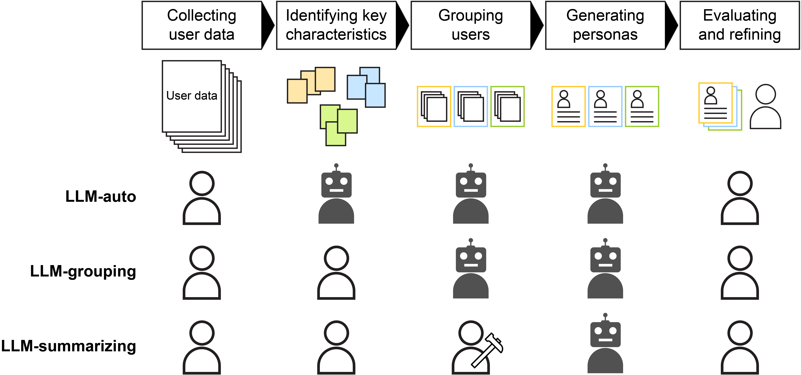
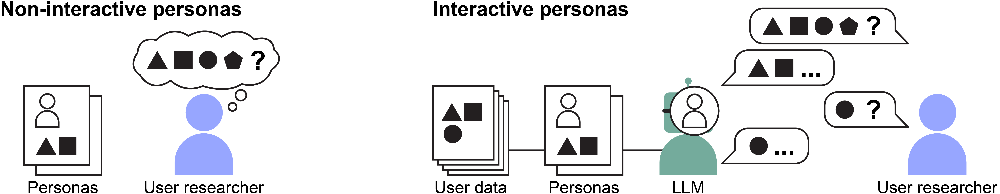

Understanding Human–AI Workflows for Generating Personas

How to generate reprsentative and empahty-evoking personas with LLMs?

Background: Personas are characters generated from user data to represent archetypal user groups and evoke empaty toward them.
Challenge: The high effort in working with user data often lead to generating personas that do not represent or evoke empathy toward users.
Motivation: Large language models (LLMs) could assist summarizing user data into personas with their text summarization capabilities. However, they also have technical limitations such as biases that can taint the quality of personas.
Approach: We explored human-AI workflows for generating high-quality personas by differently delegating persona-generation subtasks to user researchers vs. LLMs.
Result: The most representative and empathy-evoking personas can arise when user reserachers take the lead role in creating archetypal user groups and exploit LLMs' summarization capability ("LLM-summarizing" in the figure above).
Challenge: The high effort in working with user data often lead to generating personas that do not represent or evoke empathy toward users.
Motivation: Large language models (LLMs) could assist summarizing user data into personas with their text summarization capabilities. However, they also have technical limitations such as biases that can taint the quality of personas.
Approach: We explored human-AI workflows for generating high-quality personas by differently delegating persona-generation subtasks to user researchers vs. LLMs.
Result: The most representative and empathy-evoking personas can arise when user reserachers take the lead role in creating archetypal user groups and exploit LLMs' summarization capability ("LLM-summarizing" in the figure above).
How would LLMs transform the use of personas?

With their generative capabilities, LLMs could roleplay generated personas and enable interaction with personas. This interactivity could help understanding personas compared to reading them.
In our formative study, we found that the interaction via LLMs enables simulating user interview, further inquiring about users and user feedback on design solutions.
For more details, please checkout our paper: Paper
In our formative study, we found that the interaction via LLMs enables simulating user interview, further inquiring about users and user feedback on design solutions.
For more details, please checkout our paper: Paper
Video presentation
Material
Paper Code and DataBibtex
@inproceedings{shin:2024:perGenWorkflow,
title={Understanding Human–AI Workflows for Generating Personas},
author = {shin, Joongi and Hedderich, Michael A. and Rey, Bartłomiej Jakub and Lucero, Andrés and Oulasvirta, Antti},
publisher = {Association for computing Machinery},
booktitle = {Proceedings of the 2024 ACM Designing Interactive Systems Conference},
year={2024},
url={https://doi.org/10.1145/3643834.3660729},
doi={10.1145/3643834.3660729}
}